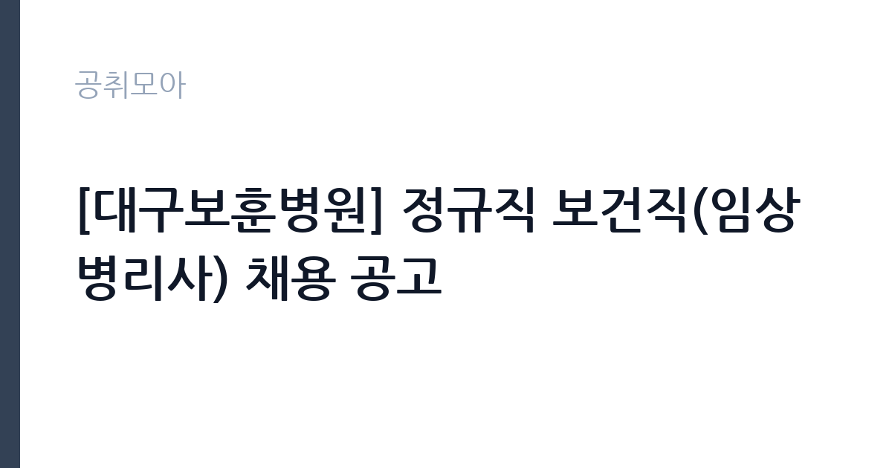

[공공기관] [대구보훈병원] 정규직 보건직(임상병리사) 채용 공고
한국보훈복지의료공단 · 대구 · 마감 2026-10-06 (D-14) · 출처 잡알리오

한눈에 보는 모집 조건
| 기관 | 한국보훈복지의료공단 |
|---|---|
| 공고명 | [대구보훈병원] 정규직 보건직(임상병리사) 채용 공고 |
| 고용형태 | 정규직 |
| 근무지 | 대구 |
| 게시일 | 2026-09-22 |
| 마감일 | 2026-10-06 (D-14) |
지원자격, 이렇게 읽으세요
- 공공기관 채용공시
- 세부 조건은 원문 공고문 확인
지원 자격은 공단 인사규정의 결격사유에 해당하지 않고 정년인 60세를 초과하지 않으며, 임상병리사 면허증을 소지하고 교대와 야간근무가 가능한 분입니다. 우대사항으로 해당 분야 근무 경력자가 안내되어 있어, 실무 경험자는 가점을 받을 수 있습니다. 세부 제출서류와 접수방법은 대구보훈병원 홈페이지의 원문 공고에서 확인하시기 바랍니다. 면허증 사본과 경력증명서를 미리 준비하시기 바랍니다.
이 공고의 포인트
첫 번째 포인트는 정규직 채용이라는 점입니다. 기간제나 계약직이 아닌 정년 보장 자리라 장기적인 경력 설계가 가능합니다. 두 번째로 보훈병원은 공공병원이라 민간병원보다 근무 강도가 안정적인 편이며, 복리후생도 공공기관 수준으로 제공됩니다. 세 번째로 임상병리 분야 경력자는 우대를 받아, 실무 경험을 쌓은 분에게 유리합니다. 대구 지역 의료직 구직자에게 좋은 기회입니다.
전형은 어떻게 진행되나
전형은 서류전형과 면접전형으로 진행되는 것이 일반적이며, 세부 일정은 병원 홈페이지의 원문에서 확인하시기 바랍니다. 접수 기간이 약 2주로 여유가 있으나, 경력증명서 발급에 시간이 걸릴 수 있으니 미리 준비하시기 바랍니다. 면접에서는 임상병리 실무 지식과 교대근무 수용 의사를 평가할 수 있습니다. 합격자 발표 이후 신체검사와 임용 절차가 이어집니다.
원문에서 확인한 전형 방식
<정규직-보건직(임상병리사)> (지원자격) - 공단 인사규정 제 18조(결격사유)에 해당하지 않는 자 - 공단 인사규정 제44조(정년)에 따른 정년(60세)을 초과하지 않는 자 - 임상병리사 면허증 소지자 - 교대 및 야간근무 가능자 (우대사항) - 해당분야 근무 경력자
이런 분께 추천해요
- 임상병리사 면허를 보유하고 교대근무가 가능하신 분
- 대구 보훈병원 정규직으로 안정적인 근무를 원하시는 분
- 임상병리 실무 경력으로 우대를 받고 싶으신 경력직
지원 전 체크리스트
- 임상병리사 면허증의 유효 여부를 확인했습니다
- 교대·야간근무 가능 여부를 본인 일정과 대조했습니다
- 경력자는 경력증명서를 발급받아 두었습니다
- 원문 공고문의 접수방법과 마감일 10월 6일을 확인했습니다
모집 일정과 제출 타이밍
마감일은 2026년 10월 6일입니다. 접수 기간이 약 2주로 비교적 여유가 있으나, 증빙서류 준비를 감안해 미리 지원하시기 바랍니다. 서류 합격자 발표와 면접은 10월 중순에 진행될 것으로 보이니 일정을 비워두시기 바랍니다. 최종합격 후 신체검사와 임용 서류 제출 절차가 이어집니다.
직무 이해하기: 공공기관
임상병리사는 병원의 진단검사의학과에서 혈액과 소변, 조직 검체의 분석을 맡습니다. 검사 장비 운영과 정도관리, 결과 판독 보조가 핵심 업무이며, 교대와 야간근무를 포함한 24시간 검사 체제를 유지합니다. 대구보훈병원은 보훈 대상자 전문 병원으로, 공공의료의 가치를 실천하는 현장입니다. 공공기관 소속 정규직으로 대구에서 근무합니다.
자기소개서 작성 팁
자기소개서에서는 임상병리 실무 경험과 검사 분야의 전문성을 구체적으로 기술하시기 바랍니다. 다뤄본 장비와 검사항목, 정도관리 경험을 수치와 함께 제시하면 좋습니다. 보훈병원이라는 공공병원을 선택한 이유를 진정성 있게 서술하시기 바랍니다. 교대근무에 대한 수용 의사를 명확히 밝히시기 바랍니다.
면접 준비 포인트
면접에서는 검체 처리와 정도관리, 응급검사 대응 같은 실무 지식을 질문받을 가능성이 큽니다. 대표 검사 프로세스를 단계별로 설명할 수 있도록 정리해 두시기 바랍니다. 교대와 야간근무에 대한 질문에는 솔직하고 긍정적으로 답변하시기 바랍니다. 공공병원 근무자로서의 사명감을 함께 전달하시기 바랍니다.
급여·근무조건 읽는 법
보수 수준은 원문 공고문에서 확인하셔야 합니다. 공단 정규직 보건직의 급여는 공단 보수규정에 따른 직급·호봉 테이블이 적용되며, 교대와 야간근무에 따른 수당이 별도로 지급됩니다. 알리오 경영공시에서 공단의 평균보수를 참고하실 수는 있으나, 개인의 초임과는 차이가 있으므로 원문을 기준으로 판단하시기 바랍니다. 정확한 초임과 수당 구성은 원문과 문의처를 통해 확인하시기 바랍니다.
자주 묻는 질문
- 정규직의 정년은 어떻게 됩니까
공단 인사규정에 따른 정년은 60세입니다. 임용일 기준 60세를 초과하지 않는 분이 지원하실 수 있습니다. - 교대근무가 필수입니까
임상병리사는 교대와 야간근무가 가능한 분을 요건으로 합니다. 검사실의 24시간 운영 체제를 유지하기 위한 조건이므로 지원 전에 본인 일정을 점검하시기 바랍니다. - 경력자는 우대받습니까
해당 분야 근무 경력자가 우대사항으로 안내되어 있습니다. 경력증명서 등 증빙서류를 빠짐없이 제출하시기 바랍니다.
함께 보면 좋은 공고
[공공기관] 한국연구재단 PM(기초연구본부장) 초빙 재공고 — 마감 2026-10-13[공공기관] 칠곡경북대학교병원 2026년 9월 5차 임시직원 채용공고(물리치료사, 간호사, 주차, 조경관리) — 마감 2026-09-28[공공기관] [KDI국제정책대학원] 2026년 제10차 인턴직원 채용(경영기획) — 마감 2026-10-08출처: 잡알리오 공개정보를 바탕으로 공취모아가 정리한 안내글입니다. 모집 조건·일정은 변경될 수 있으니 지원 전 반드시 원문 공고문을 확인하세요. 본 글은 정보 제공용이며 합격을 보장하지 않습니다.